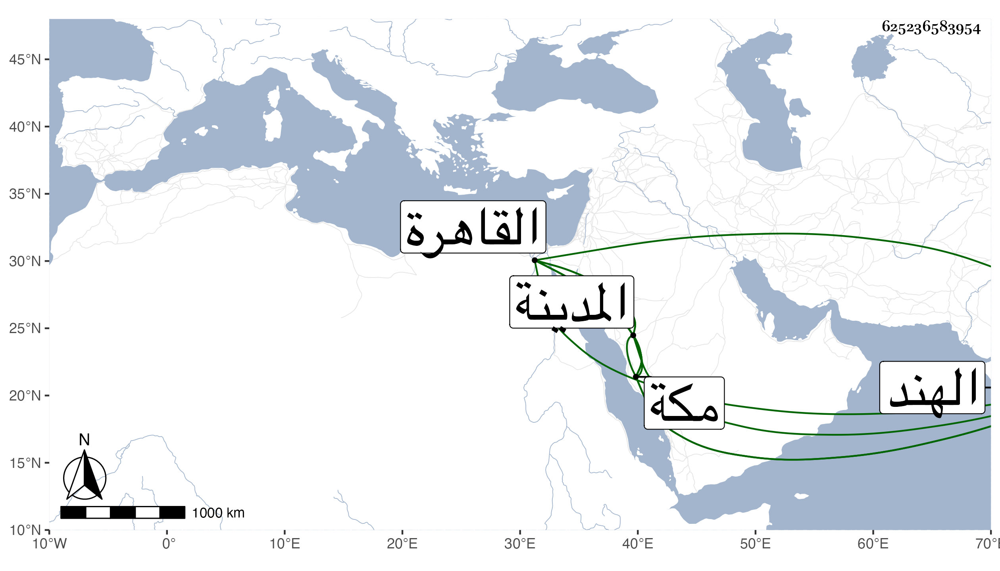

0902Sakhawi.DawLamic.ITO20230111-ara1.EIS1600.625236583954
Biography ID: 625236583954
118
محمد بن محمد غياث الدين بن السيد صاحب الشرواني العلاء محمد العجمي الآتي . مات أبوه وهو صغير فقطن مكة عند وصيه أمام مقام الحنفية الشمس البخاري ولازم السماع علي في سنة ست وثمانين وبعدها وجاور بالمدينة مع جماعة ابن الزمن قليلا وعمله شيخ رباطه بمكة وقتا ثم قدم عليه القاهرة وكان بها في سنة خمس وتسعين وأظنه سافر قبل إلى الهند وهو الآن سنة تسع وتسعين بالقاهرة له مدة فيها .
